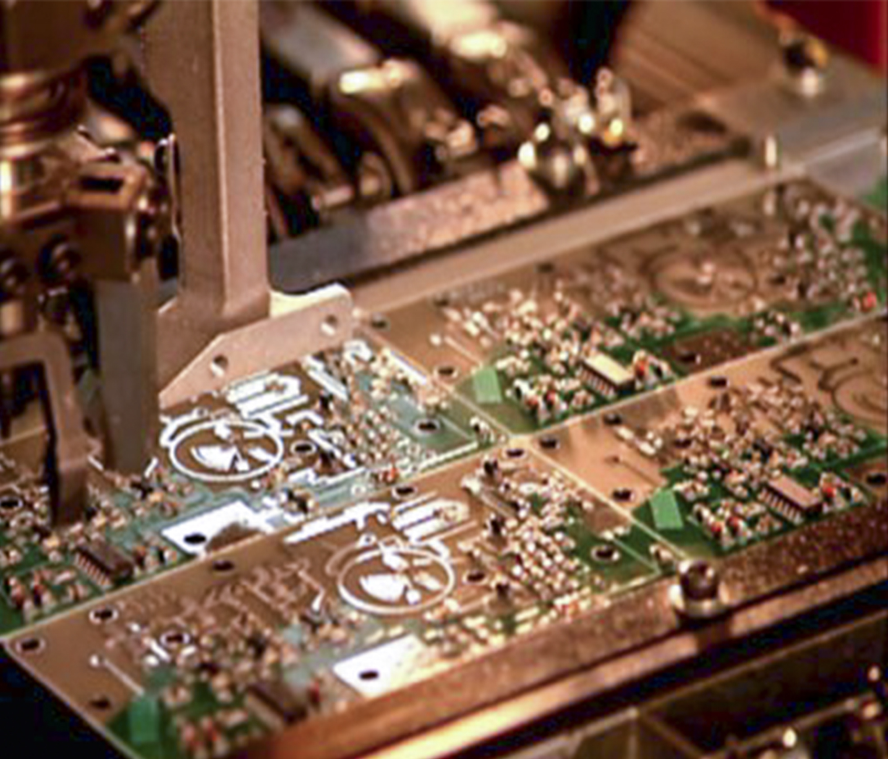
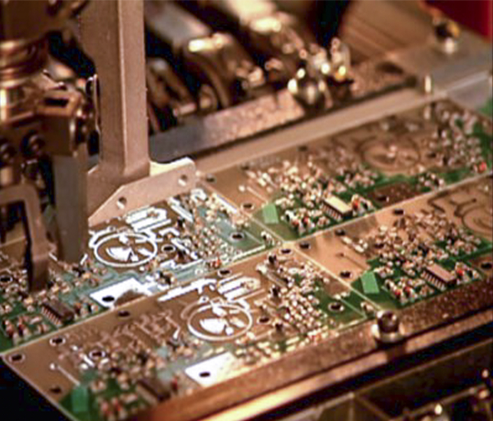

Burn it!
China
The Great Blessing of the People
and the Great Power of the Country

The Great Blessing of the People
and the Great Power of the Country
 

China has built a large number of key military enterprises, including the arms industry, aviation industry, shipbuilding industry and electronic industry. China has become the third country in the world to independently master the key technologies of space flight. This is another great feat for the Chinese people to climb the world's technological peak. It is another outstanding contribution made by the Chinese nation to the exploration and utilization of outer space by mankind.
Faithful implementation of responsibilities and in-depth implementation
innovation
driving and civil-military integration development strategy
Over the past five years, dozens of new warships have joined the battle sequence, transporting 20 and annihilating 20 to serve one after another; new air-to-air, air-to-air, air-to-air, air-to-air and air-to-air. Air-to-ground, surface-to-air missiles, advanced strategic missiles, cruise missiles and new generation armed helicopters, new main battle tanks, Beidou Satellite Navigation System, Command Automation System and a large number of other high degree of informationization, Weapons and equipment equipped with advanced levels in the world will promote the strategic transformation of our army.
Never forget the initial intention and push forward the reform and development of national defense science and technology
industry to a new level
Through R&D, design, test and production, we will promote the systematic, informative, practical and independent development of weaponry and equipment. Our army's equipment construction is at the critical moment of realizing leapfrog development. The defense science and technology industry must strengthen the Frontier Foundation of national defense. Subversive technology and advanced industrial technology research, basic research on national defense application, and exploration of strategic frontier technology. We will strive to make major breakthroughs in strategic security areas such as nuclear, space, ocean and network, and win competitive advantages in the new military revolution.